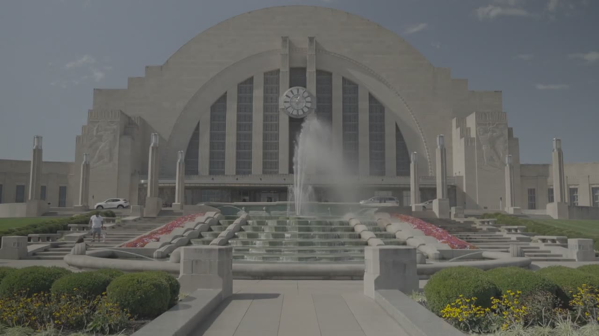

Skip to content
D
.
YM
.
Home
OMNIMAX
Peru
About Daniel
Purpose
Contact

Selected work / 01
OMNIMAX
Daniel Yanac McDonald
Behind the scenes
at OMNIMAX
.
Explore the documentary
↗
Meet Daniel
↗
Behind the Scenes at OMNIMAX | Interview with James Burns
Documentary
/
View project ↗
Meet Daniel
About Daniel
Direction & purpose
Connection. Service. Films.
02 / Supporting footage
Peru
↗